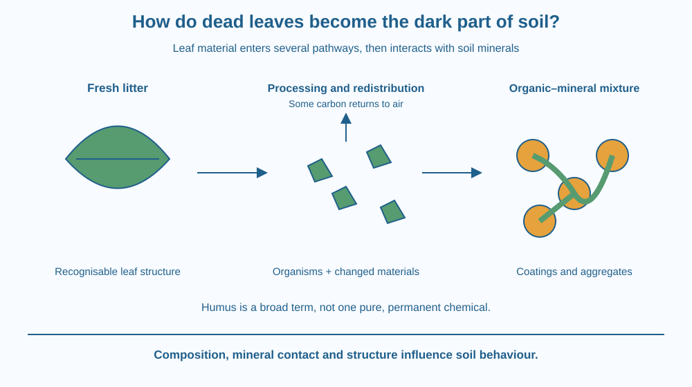

Trace fallen leaves into a changing mixture of soil organic materials. Distinguish fresh litter, decomposing material and the more transformed material often called humus. Explain how organic matter affects soil properties without treating it as a single substance or a guaranteed measure of fertility.
A fresh fallen leaf has a recognisable outline, veins and a crisp surface. Beneath an older pile, the material may be darker and more crumbly, with few intact leaves visible. Mixed into the soil, much of its original identity becomes hard to recognise.
Where did the leaf shape go, and why does the resulting material matter? The answer involves fragmentation, biological processing, movement and interactions with minerals. It is a story about the changing soil mixture, not simply a leaf being ground into smaller identical leaves.
Litter includes recently fallen leaves, twigs and other recognisable organic remains on the ground. Soil organic matter is broader. It includes materials at different stages of change, living organisms and substances associated with soil minerals.
Small animals can fragment leaves and mix pieces with the surroundings. Microorganisms process organic compounds further. We do not repeat the earlier detailed lesson on how fungal hyphae feed; here the focus is the mixture that remains, moves and interacts with the soil over time.
Some of the leaf's carbon returns to the atmosphere during biological processing. Some becomes part of organisms, and some remains in transformed organic materials. Therefore the final soil material is not simply the original leaf chopped up with every part preserved in place.
The term humus is commonly used in school science for dark, well-decomposed organic material whose original source is no longer easily recognised. It is not one pure chemical with a single formula. Modern descriptions emphasise a diverse mixture and its interactions with the surrounding soil.
Some organic material is physically protected within small soil aggregates or associated with mineral surfaces. These surroundings can make it less accessible to decomposers. Persistence therefore depends partly on the environment and mineral contact, not just on a supposedly indestructible humus molecule.
Aggregates are groups of soil particles held together in structures. Organic materials can contribute to aggregation, influencing the arrangement of pores. This can affect how water and air move through soil, although the result depends on the soil and the kind of organic input.
Organic matter can also help soils retain water and hold some nutrient ions. As materials are processed, nutrients may be released into forms organisms can use. None of this means that adding any amount of any dead material instantly supplies a balanced plant diet.
The rate of change depends on moisture, temperature, air availability, organisms and the material itself. A tough dry leaf and a softer moist leaf need not change at the same rate. No universal number of days turns every leaf pile into the same finished soil material.
Draw a pathway with several branches rather than one straight arrow from leaf to humus. One branch leads to gases, one to living organisms and another to changing organic materials mixed with minerals.
Keep the stages overlapping. A real sample can contain fresh fragments beside more transformed material and living roots. It is not necessary for the entire pile to finish one stage before any part enters another.
Draw a few mineral particles joined into an aggregate, with organic material between or on their surfaces. This shows why the final effect on soil involves relationships among materials, not just the presence of a dark colour.
The SVG shows a recognisable leaf, partly fragmented litter and organic material mixed with mineral grains. Branching arrows indicate that not all original leaf matter remains in the soil: some enters organisms or leaves as gas.
A magnified aggregate shows mineral particles with organic material at contacts and surfaces. Labels describe possible effects on structure, water and nutrient retention without assigning a fixed improvement percentage.
The final material is deliberately drawn as varied fragments and coatings rather than one identical molecule repeated everywhere. The caption identifies humus as a useful broad school term for well-transformed organic matter.

Leaf litter under trees can protect the ground while gradually contributing organic inputs. Removing every leaf changes both surface cover and the supply of material entering the soil. The effects depend on the location and how the area is managed.
School gardens sometimes use mature compost as a soil amendment. Its properties differ from those of a fresh pile of kitchen scraps. A finished-looking dark material is not automatically sterile, nutritionally complete or suitable in unlimited amounts.
In Indian home gardens, the right practice depends on space, drainage and the plants being grown. This lesson provides a mechanism for asking better questions, rather than a universal recipe for applying organic material to every soil.
Use photographs of fresh leaves, partly decomposed litter and a soil aggregate, or draw them from the lesson diagram. Do not open mouldy containers or collect material from an unknown contaminated site.
The pictures compare stages; they do not measure the time between them. Keep that distinction visible in your notebook. If you use real garden observations with an adult, avoid direct handling and wash hands afterwards.
Suppose two soils contain similar amounts of organic material, but one has more of it protected within aggregates or associated with minerals. Why might the material persist differently?
Now consider a dark soil and a pale soil. Explain why colour alone cannot tell you the full quantity, composition or usefulness of their organic matter. A visible clue is valuable, but it is not a complete chemical analysis.
What does soil organic matter include?
Answer: A — Soil organic matter is a diverse category rather than one chemical compound.
Why can mineral association affect organic matter persistence?
Answer: B — Association and physical protection can limit access by decomposers.
A soil sample is very dark. What should you avoid claiming from colour alone?
Answer: C — Colour alone does not establish all nutrient, structural and organic-matter properties.
Make a labelled poster correcting the claim that humus is “one permanent chemical made from leaves.” Include fresh litter, living organisms, transformed materials, mineral association and a route returning carbon to the atmosphere.
Add one soil-property connection, such as aggregation or water retention. Explain it as a possible influence under stated conditions, avoiding a promise that the darkest sample must always be best for every plant.
Part of what makes organic matter persist can be where it is located. Material protected inside an aggregate or associated with a mineral surface may be harder for organisms to access. Longevity is therefore partly a property of a material's surroundings and relationships, not only a property of the material by itself.
Fallen leaves enter a changing soil mixture; humus is a broad term for transformed organic matter that interacts with minerals, organisms and pore structure.